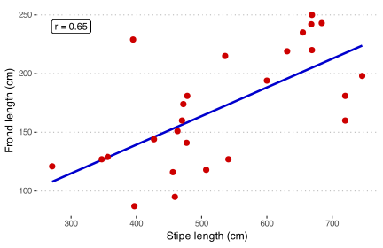
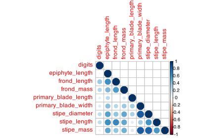

10. Correlations
The association between continuous variables
![]()
- Correlations
- Pearson’s product moment correlation
- Paired correlations
- Spearman rank correlation
- Kendal rank correlation
Find here a Cheatsheet on statistical methods.
- Task H 1
1 At a glance
Correlation analysis is used to quantify the strength and direction of the linear relationship between two continuous variables. The expectations about the data needed for a correlation analysis are:
Continuous variables Both variables should be measured on a continuous scale (e.g., height, depth, income). Note that we do not have dependent and independent variables as no dependency of one variable upon the other is implied.
Bivariate relationship Correlation analysis is used to assess the relationship between two variables at a time. If you are interested in the relationship between multiple variables, you may need to consider pairwise correlations, or other multivariate techniques such as multiple regression or canonical correlation.
Linear relationship The relationship between the two variables should be linear. This can be visually assessed using scatter plots. If the relationship is not linear, you may need to consider non-linear correlation measures, such as Spearman’s \(\rho\) correlation or Kendall’s \(\tau\).
No outliers Outliers can have a strong influence on the correlation coefficient, potentially leading to misleading conclusions. It’s important to visually inspect the data using scatter plots and address any outliers before performing correlation analysis.
Normality While not strictly required for correlation analysis, the assumption of bivariate normality can be important when making inferences about the population correlation coefficient. If the variables are not normally distributed or have a non-linear relationship, consider using non-parametric correlation measures like Spearman’s \(\rho\) correlation or Kendall’s \(\tau\).
Independence of observations The observations should be independent of each other. In the case of time series data or clustered data, this assumption may be violated, requiring specific techniques to account for the dependence (e.g., autocorrelation, cross-correlation).
Random sampling The data should be obtained through random sampling, ensuring that each observation has an equal chance of being included in the sample.
Keep in mind that correlation does not imply causation; it only describes the association between variables without establishing a cause-and-effect relationship. When the intention is to model causation you’ll need to apply a regression.
2 Introduction to correlation
A correlation is performed when we want to investigate the potential association between two continuous quantitative variables, or between some ordinal variables. We assume that the association is linear, like in a linear regression, and that one variable increases or decreases by a constant amount for a corresponding unit increase or decrease in the other variable. This does not suggest that one variable explains the other—that is the purpose of regression, as seen in Chapter 9. Like all statistical tests, correlation requires a series of assumptions:
- pair-wise data
- absence of outliers
- linearity
- normality of distribution
- homoscedasticity
- level (type) of measurement
- continuous data (Pearson \(r\))
- non-parametric correlations (Spearman’s \(\rho\) and Kendall’s \(\tau\))
3 Pearson correlation
Pearson’s \(r\):
\[r_{xy} = \frac{\sum_{i=1}^{n}(x_i - \bar{x})(y_i - \bar{y})}{\sqrt{\sum_{i=1}^{n}(x_i - \bar{x})^2}\sqrt{\sum_{i=1}^{n}(y_i - \bar{y})^2}} \tag{1}\]
where \(r_{xy}\) is the Pearson correlation coefficient, \(x_i\) and \(y_i\) are the observed values of the two variables for each observation \(i\), \(\bar{x}\) and \(\bar{y}\) are the sample means of the two variables, and \(n\) is the sample size.
Pearson’s \(r\) is a measure of the linear relationship between two variables. It assumes that the relationship between the variables is linear, and is calculated as the ratio of the covariance between the variables to the product of their standard deviations (Equation 1).
The degree of association is measured by a correlation coefficient, denoted by \(r\) (note, in a regression we use the \(r^{2}\), or \(R^{2}\)). The \(r\) statistic is a measure of linear association. The value for \(r\) varies from -1 to 1, with 0 indicating that there is absolutely no association, 1 showing a perfect positive association, and -1 a perfect inverse correlation.
In order to investigate correlations in biological data lets load the ecklonia dataset.
We will also create a subsetted version of our data by removing all of the categorical variables. If we have a dataframe where each column represents pair-wise continuous/ordinal measurements with all of the other columns we may very quickly and easily perform a much wider range of correlation analyses.
When the values we are comparing are continuous, we may use a Pearson test. This is the default and so requires little work on our end. The resulting statistic from this test is known as the Pearson correlation coefficient:
# Perform correlation analysis on two specific variables
# Note that we do not need the final two arguments in this function to be stated
# as they are the defaut settings.
# They are only shown here to illustrate that they exist.
cor.test(x = ecklonia$stipe_length, ecklonia$frond_length,
use = "everything", method = "pearson")
Pearson's product-moment correlation
data: ecklonia$stipe_length and ecklonia$frond_length
t = 4.2182, df = 24, p-value = 0.0003032
alternative hypothesis: true correlation is not equal to 0
95 percent confidence interval:
0.3548169 0.8300525
sample estimates:
cor
0.6524911 Above we have tested the correlation between the length of Ecklonia maxima stipes and the length of their fronds. A perfect positive (negative) relationship would produce a value of 1 (-1), whereas no relationship would produce a value of 0. The result above, cor = 0.65 is relatively strong.
As is the case with everything else we have learned thus far, a good visualisation can go a long way to help us understand what the statistics are doing. Below we visualise the stipe length to frond length relationship.
# Calculate Pearson r beforehand for plotting
r_print <- paste0("r = ",
round(cor(x = ecklonia$stipe_length, ecklonia$frond_length),2))
# Then create a single panel showing one correlation
ggplot(data = ecklonia, aes(x = stipe_length, y = frond_length)) +
geom_smooth(method = "lm", colour = "blue3", se = FALSE, size = 1.2) +
geom_point(size = 3, col = "red3", shape = 16) +
geom_label(x = 300, y = 240, label = r_print) +
labs(x = "Stipe length (cm)", y = "Frond length (cm)") +
theme_pubclean()
Just by eye-balling this scatterplot it should be clear that these data tend to increase at a roughly similar rate. Our Pearson r value is an indication of what that is.
Should our dataset contain multiple variables, as ecklonia does, we may investigate all of the correlations simultaneously. Remember that in order to do so we want to ensure that we may perform the same test on each of our paired variables. In this case we will use ecklonia_sub as we know that it contains only continuous data and so are appropriate for use with a Pearson test. By default R will use all of the data we give it and perform a Pearson test so we do not need to specify any further arguments. Note however that this will only output the correlation coefficients, and does not produce a full test of each correlation. This will however be useful for us to have just now.
ecklonia_pearson <- round(cor(ecklonia_sub), 2)
ecklonia_pearson |>
kbl(caption = "A pairwise matrix of the *Ecklonia* dataset.") %>%
kable_classic(full_width = FALSE)| digits | epiphyte_length | frond_length | frond_mass | primary_blade_length | primary_blade_width | stipe_diameter | stipe_length | stipe_mass | |
|---|---|---|---|---|---|---|---|---|---|
| digits | 1.00 | 0.05 | 0.36 | 0.28 | 0.10 | 0.14 | 0.24 | 0.24 | 0.07 |
| epiphyte_length | 0.05 | 1.00 | 0.61 | 0.44 | 0.26 | 0.41 | 0.54 | 0.61 | 0.51 |
| frond_length | 0.36 | 0.61 | 1.00 | 0.57 | -0.02 | 0.28 | 0.39 | 0.65 | 0.39 |
| frond_mass | 0.28 | 0.44 | 0.57 | 1.00 | 0.15 | 0.36 | 0.51 | 0.51 | 0.47 |
| primary_blade_length | 0.10 | 0.26 | -0.02 | 0.15 | 1.00 | 0.34 | 0.32 | 0.13 | 0.16 |
| primary_blade_width | 0.14 | 0.41 | 0.28 | 0.36 | 0.34 | 1.00 | 0.83 | 0.34 | 0.83 |
| stipe_diameter | 0.24 | 0.54 | 0.39 | 0.51 | 0.32 | 0.83 | 1.00 | 0.59 | 0.82 |
| stipe_length | 0.24 | 0.61 | 0.65 | 0.51 | 0.13 | 0.34 | 0.59 | 1.00 | 0.58 |
| stipe_mass | 0.07 | 0.51 | 0.39 | 0.47 | 0.16 | 0.83 | 0.82 | 0.58 | 1.00 |
How would we visualise this matrix of correlations? It is relatively straightforward to quickly plot correlation results for all of our variables in one go. In order to show which variables associate most with which other variables all at once, without creating chaos, we will create what is known as a pairwise correlation plot. This visualisation uses a range of colours, usually blue to red, to demonstrate where more of something is. In this case, we use it to show where more correlation is occurring between morphometric properties of the kelp Ecklonia maxima.
# extract the lower triangle and plot
ecklonia_pearson[upper.tri(ecklonia_pearson)] <- NA
corrplot(ecklonia_pearson, method = "circle", na.label.col = "white")
Let’s do it is ggplot2 (Figure 3). Here I use the geom_tile() function. However, before I can use the data in ggplot2, I need to create a long dataframe from the correlation matrix, and I can do this with the pivot_longer() function. There are several other methods for plotting pairwise correlations available—please feel free to scratch around the internet for options you like. This graph is called a heatmap, which is not dissimilar to the heatmaps and Hovmöller diagrams created in Chapter 2.
Pairwise correlations are useful for identifying patterns and relationships between variables that may be hidden in the overall correlation structure of the dataset. This is particularly useful in a large dataset with many variables, where this type of analysis—especially when coupled with a suitable visualisation—can help identify subsets of variables that are strongly related to each other, which can then point the path to further analysis or modelling.
ecklonia_pearson |>
as.data.frame() |>
mutate(x = rownames(ecklonia_pearson)) |>
pivot_longer(cols = stipe_length:epiphyte_length,
names_to = "y",
values_to = "r") |>
filter(x != "digits") |>
ggplot(aes(x, y, fill = r)) +
geom_tile(color = "white") +
scale_fill_gradient2(low = "blue", high = "red", mid = "white",
midpoint = 0, limit = c(-1, 1),
na.value = "grey95",, space = "Lab",
name = "r") +
xlab(NULL) + ylab(NULL) +
theme_minimal() +
theme(axis.text.x = element_text(angle = 45, vjust = 1,
hjust = 1)) +
coord_fixed() 4 Spearman rank correlation
Spearman correlation is used to measure the strength and direction of the relationship between two variables, based on their rank order. Unlike Pearson correlation, which assumes that the relationship between two variables is linear, Spearman correlation can be used to measure the strength of any monotonic relationship, whether it is linear or not. Additionally, this correlation is useful even when the data are not normally distributed, or contain outliers.
To calculate the Spearman correlation coefficient, \(\rho\), the values of both variables are first ranked from lowest to highest and each value is assigned a numerical rank based on its position in the ordered list. Then, the difference between the ranks of the two variables is calculated for each observation, and the squared differences are summed across all observations. The Spearman correlation coefficient is then calculated as the ratio of the sum of the squared differences to the total number of observations, adjusted for ties (Equation 2). Like the Pearson correlation coefficient, \(\rho\) can also range from -1 to +1.
Spearman’s \(\rho\): \[\rho = 1 - \frac{6 \sum_{i=1}^n d_i^2}{n(n^2-1)} \tag{2}\]
where \(\rho\) is the Spearman correlation, \(d_i\) is the difference between the ranks of the two variables for the \(i^{th}\) observation, and \(n\) is the sample size. The factor of 6 in the equation is a normalisation constant that adjusts the range of possible values of the correlation coefficient to be between -1 and +1.
In the code below we will add a column of ordinal data to our ecklonia data to so that we may look at this test.
# Create ordinal data
ecklonia$length <- as.numeric(cut((ecklonia$stipe_length + ecklonia$frond_length), breaks = 3))
# What does this new column look like?
head(select(ecklonia, c(species, site, stipe_length, frond_length, length)), 10) species site stipe_length frond_length length
1 maxima Boulders Beach 456 116 1
2 maxima Boulders Beach 477 141 2
3 maxima Boulders Beach 427 144 1
4 maxima Boulders Beach 347 127 1
5 maxima Boulders Beach 470 160 2
6 maxima Boulders Beach 478 181 2
7 maxima Boulders Beach 472 174 2
8 maxima Boulders Beach 459 95 1
9 maxima Boulders Beach 397 87 1
10 maxima Boulders Beach 541 127 2Now let us correlate the new length variable with any one of the other variables:
cor.test(ecklonia$length, ecklonia$digits, method = "spearman")
Spearman's rank correlation rho
data: ecklonia$length and ecklonia$digits
S = 1930, p-value = 0.08906
alternative hypothesis: true rho is not equal to 0
sample estimates:
rho
0.3401765 5 Kendall rank correlation
Kendall’s correlation, also known as Kendall’s \(\tau\), is a non-parametric correlation method for assessing the strength and direction of the relationship between two variables. It is similar to Spearman’s rank correlation, but it is calculated differently.
Kendall’s \(\tau\) is calculated based on the number of concordant and discordant pairs of observations between the two variables being correlated. A concordant pair is one in which the values of both variables have the same order, meaning that if the value of one variable is higher than the other for one observation, it is also higher for the other observation. A discordant pair is one in which the values of the two variables have different order, meaning that if one variable is higher than the other for one observation, it is lower for the other observation.
\(\tau\) is calculated as the difference between the number of concordant and discordant pairs of observations, divided by the total number of possible pairs (Equation 3). As in Pearson’s and Spearman’s correlations, the result also ranges from -1 and +1.
Kendal’s \(\tau\): \[\tau = \frac{n_c - n_d}{\binom{n}{2}} \tag{3}\]
where \(\tau\) is Kendall’s \(\tau\) correlation coefficient, \(n\) is the sample size, \(n_c\) is the number of concordant pairs of observations, \(n_d\) is the number of discordant pairs of observations, and \(\binom{n}{2}\) is the number of possible pairs of observations in the sample.
Kendall’s \(\tau\) is a useful correlation statistic for non-parametric data, such as ordinal or categorical data, and is robust to outliers and non-normal distributions.
Let’s look at the normality of our ecklonia variables and pull out those that are not normal in order to see how the results of this test may differ from our Pearson tests.
ecklonia_norm <- ecklonia_sub %>%
gather(key = "variable") %>%
group_by(variable) %>%
summarise(variable_norm = as.numeric(shapiro.test(value)[2]))
ecklonia_norm# A tibble: 9 × 2
variable variable_norm
<chr> <dbl>
1 digits 0.0671
2 epiphyte_length 0.626
3 frond_length 0.202
4 frond_mass 0.277
5 primary_blade_length 0.00393
6 primary_blade_width 0.314
7 stipe_diameter 0.170
8 stipe_length 0.213
9 stipe_mass 0.817 From this analysis we may see that the values for primary blade length are not normally distributed. In order to make up for this violation of our assumption of normality we may use the Kendall test.
cor.test(ecklonia$primary_blade_length, ecklonia$primary_blade_width, method = "kendall")
Kendall's rank correlation tau
data: ecklonia$primary_blade_length and ecklonia$primary_blade_width
z = 2.3601, p-value = 0.01827
alternative hypothesis: true tau is not equal to 0
sample estimates:
tau
0.3426171 Here the correlation coefficient is called Kendall’s \(\tau\) but it is interpreted as we would Pearson’s.
- Find your own two datasets and do a full correlation analysis on it. Briefly describe the data and the reason for their existence. Start with setting the appropriate hypotheses. Follow with an EDA, make some exploratory figures, fit the correlation, make figures with the fitted correlation line, provide diagnostic plots to test assumptions, and present the output in a Results section suitable for publication.
Reuse
Citation
@online{smit2021,
author = {Smit, AJ},
title = {10. {Correlations}},
date = {2021-01-01},
url = {https://tangledbank.netlify.app/BCB744/basic_stats/10-correlations.html},
langid = {en}
}